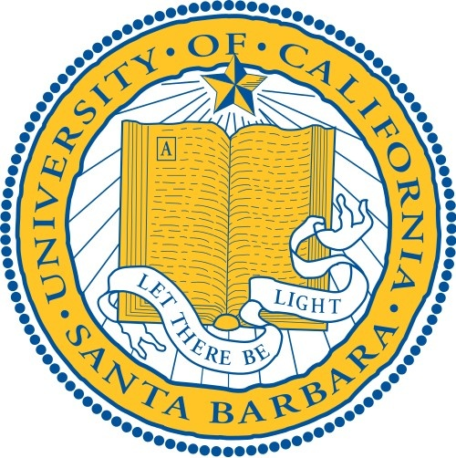
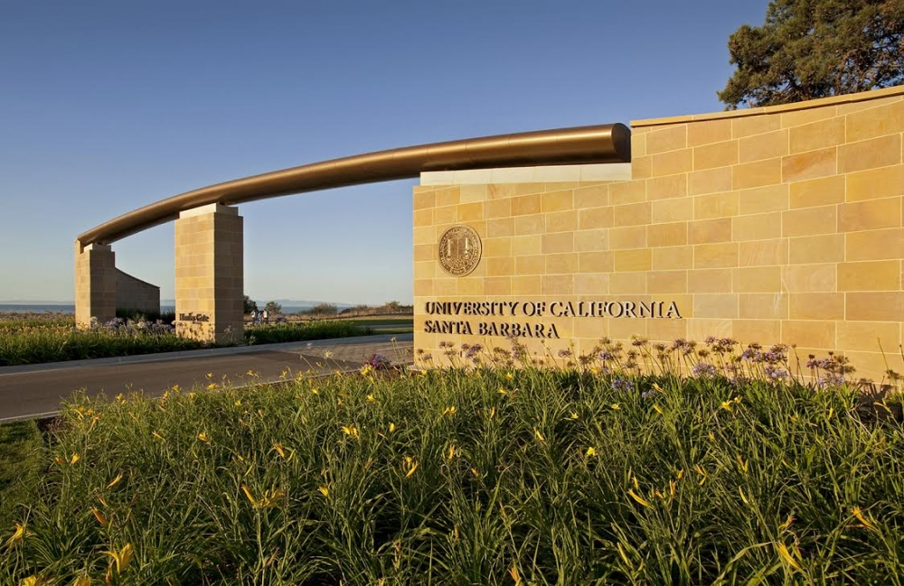
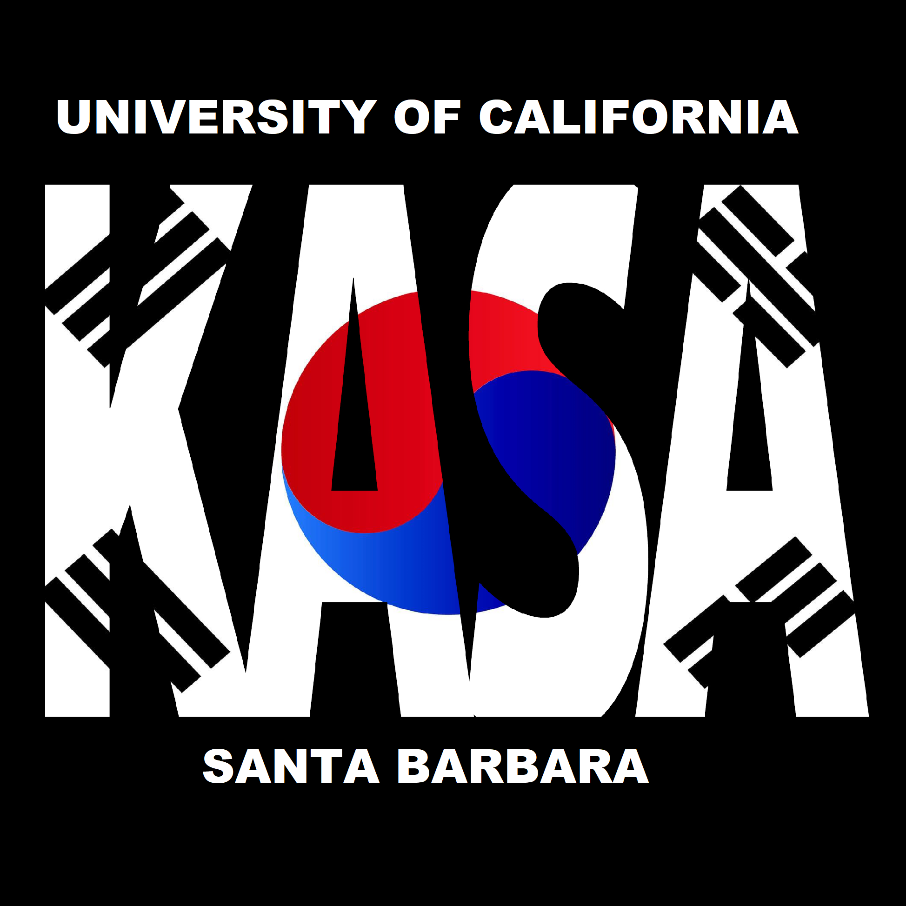
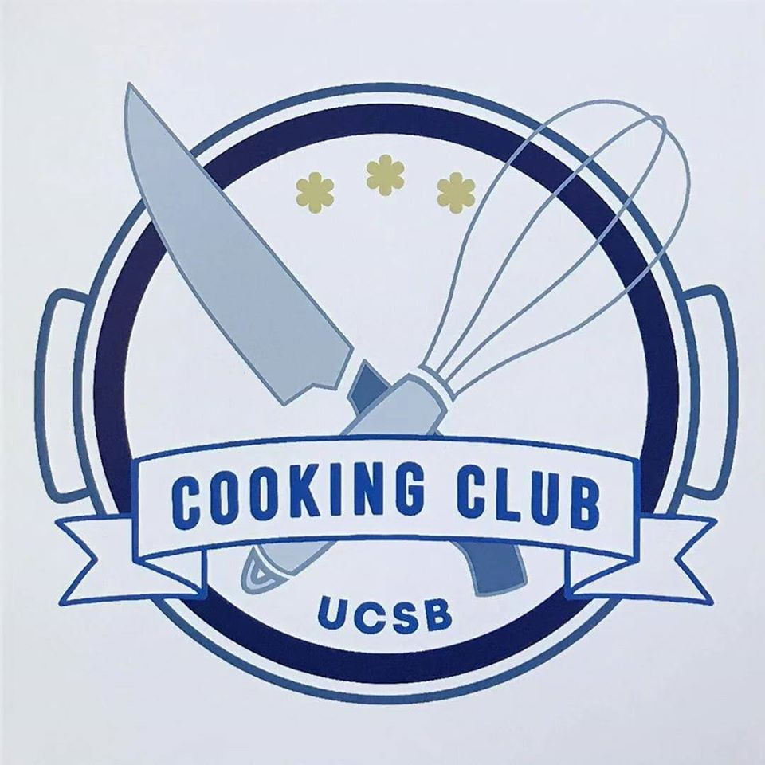
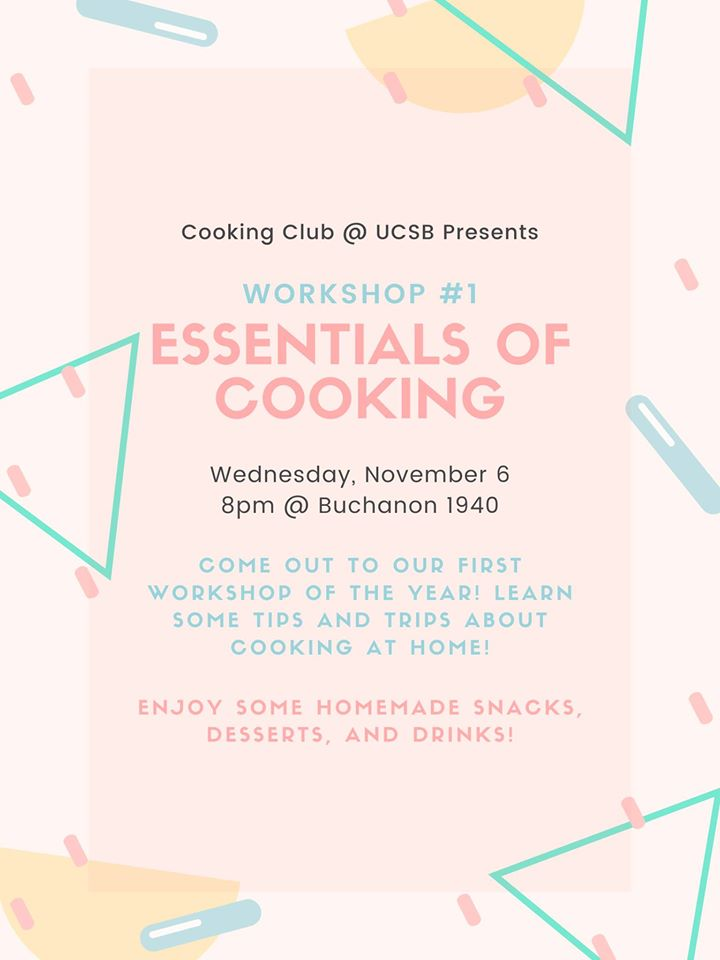
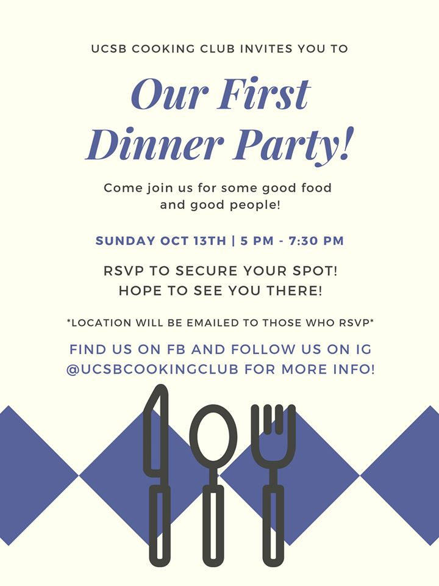

U C S B
I am currently a second year student at University of California, Santa Barbara majoring in Computer Science.
I plan on graduating and receiving a Bachelor of Science in Computer Science in June 2022.


EXTRACURRICULAR ACTIVITIES
I am currently a member of Theta Tau, the largest and oldest co-ed professional engineering fraternity. The UCSB chapter of Theta Tau is the 100th chapter and was installed on June 1, 2019 as the Sigma Epsilon Chapter!
I became a member of the fraternity in June 2019, as part of Epsilon Class. Theta Tau has allowed me to meet so many wonderful people that I can call my brothers and that I can bond with and look up to for academic and career advice. Theta Tau has also given me the opportunity to grow as an individual and as a student, and has pushed me to work harder on myself and on my academics.
I am head of the Brotherhood and Professional Development Committee. I work with a committee of 8 other members to create engaging as well as professional bi-weekly events for members of the fraternity. Along with the committee, we coordinated with a body of over 50 members to create events and strong networks connected by brotherhood and professional development.


I am a staff member of the Korean American Student Association on the Events Committee. Along with two committee members and 20 other student staff members, we plan social events, club family events, bonding events, etc. We also collaborate with other Asian organizations on campus, such as the Vietnamese Student Association (VSA) and the Taiwanese American Student Association (TASA), to plan events that bring more interest and awareness to Asian ethnicities. I have been a member of KASA since September 2018 and a staff member since January 2019.
(Fun Fact: I designed this logo.)


I am a founder and staff member of Cooking Club at UCSB as the social media chair. I worked alongside a team of 10 students to establish the new club in September 2019 with the goal of engaging students interested in cooking and providing a source of advice and tips for college students struggling with cooking. As social media chair, I design flyers, promote future events on numerous social media platforms, and talk online with students interested in events and joining the club.

Here are some of the flyers I have designed for Cooking Club events.


WHY I'M STUDYING COMPUTER SCIENCE
I have had an interest in computer science since 8th grade. There was a "web development" class offered that taught the basic skills of HTML and CSS. I thought the class was really interesting and I really enjoyed how creative you can be with HTML and CSS.
Fast forward to sophomore year of high school, I took a class called "Principles of Computer Science," which was taught in Scratch and Python. Scratch was a very helpful way to learn the fundamentals of computer science because you could visualize blocks of code and how they affected each other. Then with Python, it was about learning the syntax and how to code the language, and then implementing code into different parts of a program.
The following year, I took "AP Computer Science," that was taught in Java, which was completely different from Python syntax-wise, but I could draw similarities in concepts and foundations between the two languages, which opened my mind to computer science.
Ultimately, I chose to study computer science at UCSB because I have always loved how free and creative computer science is. Given HTML and CSS, you can build any type of website and there are so many styling options. With Python, Java, C++, etc., you can create all kinds of programs with any of these languages. It amazed me how the underlying foundation and fundamentals of coding languages were relatively similar, so as long as you knew the correct syntax for each language, you could create anything.
WHY I CHOSE UCSB
I never had the opportunity to visit colleges before I made my decision on which college to attend. My parents were always busy working, we needed a dogsitter, and I was busy with either school, work, or other extracurricular activities.
My decision was between UC Santa Barbara and UC San Diego. UCSB had the reputation of being a "party school" and UCSD was known as "UC Socially Dead." I had older friends who went to both schools, so I asked them about their first year college experience. Friends at UCSB said that everyone is very helpful and supportive and that the school has a very nice atmosphere to it. Friends at UCSD said that the school is really quiet and people tend to stay inside.
In the end, I chose to attend UCSB because I felt that it would be a better fit for me. I felt that the people at UCSB would be the people that I would want to surround myself with. Furthermore, UCSB was closer to my hometown than UCSD, only a 5 hour drive compared to 9 hours. I wanted to be close enough to home that a trip home wouldn't be too much of a hassle, but far enough from home so that I could grow as my own person and grow to be more independent.
Ultimately, I am extremely glad that I chose to attend UCSB. I was able to meet some of my closest friends through classes, clubs, and extracurricular activities. I was able to find my home away from home, and especially after I moved from California to New Jersey, I really needed my close group of friends for support. UCSB also helped me grow independently, manage my time better, and learn to live on my own.